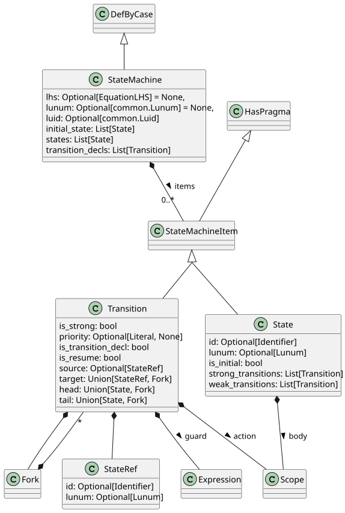

State machines#
The Swan language has the notion of a state machine, represented by the StateMachine class. A state machine is composed of:
states, represented by the
Stateclass;transitions between states, represented by the
Transitionclass;forks, represented by the
Forkclass, which are used to split transitions into several branches.
The figure Fig. 9 shows the classes hierarchy and the relationships between these classes.

Fig. 9 States and transition declarations#
Note
The Swan language has two syntaxes for defining transitions:
Inline transitions: defined directly within the state definition. This syntax is used to defined an automaton within a let section.
Separate transition declarations: defined outside the state, referencing the state by its ID. This syntax is used to define a state machine within a diagram, using a
StateMachineBlockwithin a Diagrams.
- The two notations are abstracted, and the
Transitionclass represents both notations. TheTransition.is_transition_declproperty indicates whether the transition is a separate declaration (is_transition_decl=True) or an inline transition.
In addition a transition can be:
between two states, which a direct transition;
a part of a transition starting from a state and going to fork, which can split into several branches.
The Transition class represents either a direct state-to-state transition or any part when there are forks.
State machine#
- class ansys.scadeone.core.swan.StateMachine(lhs: EquationLHS | None = None, items: List[StateMachineItem] | None = None, lunum: Lunum | None = None, luid: Luid | None = None)#
Bases:
DefByCase,StateMachineCreatorState machine definition.
A state machine contains states and transition declarations defined as items.
Consider using
StateMachine.statesandStateMachine.transition_declsproperties to get the list of states and transition declarations.- static set_owner(owner: SwanItem | IModel | None, children: SwanItem | Iterable[SwanItem] | None) None#
Helper to set owner as the owner of each item in the Iterable items.
- add_state(name: str, is_initial: bool = False, is_default: bool = False) swan.State#
Add a state to the state machine.
- add_strong_transition(source: swan.State, target: swan.State, priority: int | None = None, guard: swan.Expression | str = 'true', action: swan.Scope | str | None = None) swan.Transition#
Add a strong transition between states.
The created transition declaration is added to
StateMachine.transition_declsproperty of the state machine.- Parameters:
- source
swan.State The state from which the transition starts.
- target
swan.State The state to which the transition goes.
- priority
Optional[int],optional The transition priority when several transitions have the same source state.
- guard
Union[swan.Expression|str],optional Expression representing the guard condition. Can be either a
swan.Expressionor a string. Default value is theswan.BooleanLiteraltrue.- action
Optional[swan.Scope|str],optional Expression representing the action to trigger. Can be either a
swan.Scopeor a string.
- source
- Returns:
TransitionThe created transition.
- add_weak_transition(source: swan.State, target: swan.State, priority: int | None = None, guard: swan.Expression | str = 'true', action: swan.Scope | str | None = None) swan.Transition#
Add a weak transition between states.
The created transition declaration is added to
StateMachine.transition_declsproperty of the state machine.- Parameters:
- source
swan.State The state from which the transition starts.
- target
swan.State The state to which the transition goes.
- priority
Optional[int],optional The transition priority when several transitions have the same source state.
- guard
Union[swan.Expression|str],optional Expression representing the guard condition. Can be either a
swan.Expressionor a string. Default value is theswan.BooleanLiteraltrue.- action
Optional[swan.Scope|str],optional Expression representing the action to trigger. Can be either a
swan.Scopeor a string.
- source
- Returns:
TransitionThe created transition.
- get_full_path() str#
Full path of the Swan construct.
This method is implemented by derived classes that correspond to a declaration at the module level (such as sensor, type, group, const, operator), or a module itself.
- Returns:
strPath within the owner and name of the Swan construct.
- Raises:
ScadeOneExceptionIf the method is not implemented for the current SwanItem type.
- get_state(state_id: str | Identifier | Lunum | StateRef) State | None#
Retrieve a state object matching the given identifier or lunum.
- Parameters:
- state_id
Union[str,Identifier,Lunum,StateRef] The identifier or lunum to match against the states. If a string is provided, it is treated as an identifier. If a StateRef is provided, identifier or lunum are used for matching (lunum has priority if both are set).
- state_id
- Returns:
- Raises:
ScadeOneExceptionIf ident type is not supported.
- remove_transition(transition: swan.Transition) None#
Remove a transition from its owner.
- Parameters:
- transition
Transition The transition to remove.
- transition
- property all_transitions: List[Transition]#
Return all transitions, strong and weak, of all states.
- property default_state: List[State]#
Return the default state, or None if no default state. The default state is marked with dedicated pragma.
- property initial_state: List[State]#
Return the initial state, or None if no initial state. There should be only one initial state, but this is not checked is there are multiple initial states.
- property is_protected: bool#
Tell if a construct item is syntactically protected with some markup and is stored as a string (without the markup).
- property items: List[StateMachineItem]#
List of states and transition declarations in declaration order.
Consider using
StateMachine.statesandStateMachine.transition_declsproperties to get the list of states and transition declarations.
- property lhs: EquationLHS | None#
Left-hand side of the equation, may be None.
- property model: IModel#
Return model containing the Swan item.
- property module: ModuleBase | None#
Module containing the item.
- Returns:
ModuleBase: module container, see
ModuleBodyandModuleInterfaceor None if the object is itself a module.
- property transition_decls: List[Transition]#
List of transition declarations, defined in the automaton (not in a state).
States#
A state may have a body, as a scope and may have transitions as Transition objects. In that case,
transitions belongs to the strong or weak lists.
- class ansys.scadeone.core.swan.State(id: Identifier | None = None, lunum: Lunum | None = None, in_state_strong_transition_decls: List[Transition] | None = None, body: Scope | None = None, in_state_weak_transition_decls: List[Transition] | None = None, is_initial: bool = False, pragmas: List[Pragma] | None = None)#
Bases:
StateMachineItem,StateCreatorState definition.
Note
Syntactically, state transitions can be defined either in the state declaration, or in the automaton as separate items. Transitions defined in the state declaration are stored within the state, using the
State.in_state_strong_transition_declsandState.in_state_weak_transition_declsproperties. These properties are used to preserve the original Swan description.Consider using instead the
State.strong_transitionsandState.weak_transitionsproperties. They return the list of all strong and weak transitions, respectively. They combine the transitions defined in the state declaration, and the transitions defined in the automaton with this state as source.- Parameters:
- id
Optional[common.Identifier] State identifier, None if not set.
- lunum
Optional[common.Lunum] State lunum, None if not set.
- in_state_strong_transition_decls
Optional[List[Transition]] List of strong transitions, None if not set. These are the transitions found in the state declaration. They are kept to preserve the original Swan description.
- body
Optional[scopes.Scope] Body of the state as a Scope, None if not set. Note that syntactically, the body is a list of
Section.- in_state_weak_transition_decls
Optional[List[Transition]] List of weak transitions, None if not set. These are the transitions that are found in the state declaration. They are kept to preserve the original Swan description.
- is_initialbool
True if the state is the initial state.
- id
- static set_owner(owner: SwanItem | IModel | None, children: SwanItem | Iterable[SwanItem] | None) None#
Helper to set owner as the owner of each item in the Iterable items.
- get_full_path() str#
Full path of the Swan construct.
This method is implemented by derived classes that correspond to a declaration at the module level (such as sensor, type, group, const, operator), or a module itself.
- Returns:
strPath within the owner and name of the Swan construct.
- Raises:
ScadeOneExceptionIf the method is not implemented for the current SwanItem type.
- set_as_initial() None#
Set the state as initial in the automaton, unsetting any other initial state.
- property diagram: swan.Diagram#
State’s diagram.
- property id: Identifier | None#
State ID.
- property in_state_strong_transition_decls: List[Transition]#
List of strong transitions defined in the state declaration.
Consider using
State.strong_transitionsproperty to get the list of all strong transitions (defined in the state and/or defined in the automaton with this state as source).
- property in_state_weak_transition_decls: List[Transition]#
List of weak transitions defined in the state declaration.
Consider using
State.weak_transitionsproperty to get the list of all weak transitions (defined in the state and/or defined in the automaton with this state as target).
- property is_default: bool#
True when state is default, i.e., marked with a pragma of kind CGPragmaKind.DEFAULT.
- property is_protected: bool#
Tell if a construct item is syntactically protected with some markup and is stored as a string (without the markup).
- property model: IModel#
Return model containing the Swan item.
- property module: ModuleBase | None#
Module containing the item.
- Returns:
ModuleBase: module container, see
ModuleBodyandModuleInterfaceor None if the object is itself a module.
- property strong_transitions: List[Transition]#
List of strong transitions, sorted by priority. It combines:
transitions defined in the state declaration,
transitions declared outside of states with this state as source.
Note
Adding or removing transitions from this list does not change the state transitions. Use
State.in_state_strong_transition_declsto modify the list of strong transitions defined within the state, or changes the automaton’s transitions for this state.
- property weak_transitions: List[Transition]#
List of weak transitions, sorted by priority. It combines:
transitions defined in the state declaration,
transitions declared outside of states with this state as target.
Note
Adding or removing transitions from this list does not change the state transitions. Use
State.in_state_weak_transition_declsto modify the list of weak transitions defined within the state, or changes the automaton’s transitions for this state.
Transitions#
A transition gathers the following information:
its priority,
whether it is a strong or weak transition;
a guard condition, represented by a
common.Expressionobject;an action, represented by a
scopes.Scopeobject;if target is a state, whether it is a resume or restart transition (see
Transition.is_resume).
The priority and the kind of transition (strong or weak) are defined for the whole transition, or for the start branch in case of a fork.
- class ansys.scadeone.core.swan.Transition(priority: Literal | None, is_strong: bool, guard: Expression | None, action: Scope | None, target: StateRef | Fork, source: StateRef | None = None, is_resume: bool = False, pragmas: List[Pragma] | None = None)#
Bases:
StateMachineItem,TransitionCreatorTransition definition between states or forks.
A transition can be between two states, or from a state to a fork, or from a fork to a state. The Transition class represents all these cases, including the case with a guard or not, a source state or not (for transition declarations), a priority or not, and a resume or restart type.
- Parameters:
- priority
Optional[Literal] Transition priority, None if not set.
- is_strongbool
True if the transition is strong, False if weak.
- guard
Optional[common.Expression] Transition guard, None if not set.
- action
Optional[scopes.Scope] Transition action, None if not set.
- target
Union[StateRef,Fork] Transition target, either a StateRef or a Fork.
- source
Optional[StateRef],optional Transition source, None if not set (for transition declarations), by default None.
- is_resumebool,
optional True if the transition is a resume transition, False if restart, by default False. Only applies to transitions to a state.
- pragmas
Optional[List[common.Pragma]],optional List of pragmas associated with the transition, None if not set. Apply to the transition itself, either a state-to-state or state-to-fork transition, by default None.
- priority
- static set_owner(owner: SwanItem | IModel | None, children: SwanItem | Iterable[SwanItem] | None) None#
Helper to set owner as the owner of each item in the Iterable items.
- static sort_key(transition: Transition) int | float#
Key function to sort transitions by priority, with None as lowest priority. This key can be used in sort() or sorted() functions.
- add_fork(guard: swan.Expression | str = 'true', action: swan.Scope | str | None = None) tuple[swan.Fork, swan.Transition]#
Add a fork to the transition (either between two states or between a fork and a state).
The target of the transition is modified to point to the future fork. The returned fork is created with one default outgoing transition pointing to the original transition target. The outgoing transition type (strong or weak) is the same as the original transition type.
- Parameters:
- guard
Union[swan.Expression|str],optional Expression representing the guard condition. Can be either a
swan.Expressionor a string. Default value is theswan.BooleanLiteraltrue.- action
Optional[swan.Section|str],optional Expression representing the action to trigger. Can be either a
swan.Sectionor a string.
- guard
- Returns:
Fork,TransitionThe created fork with one outgoing transition between the fork and the original transition target
- get_full_path() str#
Full path of the Swan construct.
This method is implemented by derived classes that correspond to a declaration at the module level (such as sensor, type, group, const, operator), or a module itself.
- Returns:
strPath within the owner and name of the Swan construct.
- Raises:
ScadeOneExceptionIf the method is not implemented for the current SwanItem type.
- property guard: Expression | None#
Transition guard or None. Apply to transition start, or to else branch of a fork.
- property head: State | Fork#
Transition target, either a State or a Fork.
- Raises:
ScadeOneExceptionIf the target is a StateRef and the actual State cannot be found.
- property is_protected: bool#
Tell if a construct item is syntactically protected with some markup and is stored as a string (without the markup).
- property is_transition_decl: bool#
True when the transition is a source (whole state-to-state transition, or state-to-fork transition).
- property model: IModel#
Return model containing the Swan item.
- property module: ModuleBase | None#
Module containing the item.
- Returns:
ModuleBase: module container, see
ModuleBodyandModuleInterfaceor None if the object is itself a module.
- property source: StateRef | None#
Transition source, either a StateRef (transition declaration), or None. Consider using
Transition.tailproperty to get the actual source.
- property target: StateRef | Fork#
Transition target, either a StateRef, or a Fork. Consider using
Transition.headproperty to get the actual target.
Reference to states#
Transitions reference their source and target states using StateRef objects as internal information to defined start and end states.
The actual state can be accessed using the Transition.head and Transition.tail properties, which resolve the references.
- class ansys.scadeone.core.swan.StateRef(id: Identifier | None = None, lunum: Lunum | None = None)#
Bases:
SwanItemReference to a state in a state machine.
This class is used to reference a state in a state machine, either by its identifier or its lunum. It also includes a flag to indicate whether the state should be resumed or restarted.
- Parameters:
- id
Optional[common.Identifier] The identifier of the state. Default is None.
- lunum
Optional[common.Lunum] The lunum of the state. Default is None.
- id
- Raises:
ScadeOneExceptionIf both id and lunum are None, or if both are provided.
- static set_owner(owner: SwanItem | IModel | None, children: SwanItem | Iterable[SwanItem] | None) None#
Helper to set owner as the owner of each item in the Iterable items.
- get_full_path() str#
Full path of the Swan construct.
This method is implemented by derived classes that correspond to a declaration at the module level (such as sensor, type, group, const, operator), or a module itself.
- Returns:
strPath within the owner and name of the Swan construct.
- Raises:
ScadeOneExceptionIf the method is not implemented for the current SwanItem type.
- property id: Identifier | None#
State identifier, or None if lunum is used.
- property is_protected: bool#
Tell if a construct item is syntactically protected with some markup and is stored as a string (without the markup).
- property model: IModel#
Return model containing the Swan item.
- property module: ModuleBase | None#
Module containing the item.
- Returns:
ModuleBase: module container, see
ModuleBodyandModuleInterfaceor None if the object is itself a module.
Forks#
Forks are transitions that split into several branches. Each branch is represented by a Transition object,
and the fork itself is represented by a Fork object.
- class ansys.scadeone.core.swan.Fork(transitions: List[Transition])#
Bases:
SwanItem,ForkCreatorBase class for fork-related classes. Transitions are ordered by priority, with the first transition having the highest priority.
If the latest transition has None guard, it is the else branch.
- static set_owner(owner: SwanItem | IModel | None, children: SwanItem | Iterable[SwanItem] | None) None#
Helper to set owner as the owner of each item in the Iterable items.
- add_fork_transition(target: swan.State, priority: int, guard: swan.Expression | str = 'true', action: swan.Scope | str | None = None, is_resume: bool = False, is_else: bool = False) swan.Transition#
Add a new transition starting from the fork to the state provided in argument.
The transition type (weak or strong) is the same as the incoming transition of the fork. To create an else branch transition, do not provide any guard condition, use parameter is_else=True and invoke this method last after creating all other fork transitions.
- Parameters:
- target
swan.State The state to which the transition goes.
- priority
int The transition priority when several transitions have the same source fork.
- guard
Union[swan.Expression|str],optional Expression representing the guard condition. Can be either a
swan.Expressionor a string. Default value is theswan.BooleanLiteraltrue.- action
Optional[swan.Scope|str],optional Expression representing the action to trigger. Can be either a
swan.Scopeor a string.- is_resumebool,
optional True if the transition is a resume transition, False for restart transition. Default is False.
- is_elsebool,
optional True if the transition is an else branch transition, False otherwise. Default is False. Note that an else branch transition must not have any guard condition.
- target
- Returns:
TransitionThe transition starting from the fork to the target state
- get_full_path() str#
Full path of the Swan construct.
This method is implemented by derived classes that correspond to a declaration at the module level (such as sensor, type, group, const, operator), or a module itself.
- Returns:
strPath within the owner and name of the Swan construct.
- Raises:
ScadeOneExceptionIf the method is not implemented for the current SwanItem type.
- property from_transition: Transition#
Return the transition owning this fork.
- property is_protected: bool#
Tell if a construct item is syntactically protected with some markup and is stored as a string (without the markup).
- property model: IModel#
Return model containing the Swan item.
- property module: ModuleBase | None#
Module containing the item.
- Returns:
ModuleBase: module container, see
ModuleBodyandModuleInterfaceor None if the object is itself a module.
- property transitions: List[Transition]#
List of transitions, sorted by priority.
Note
A new list is returned, modifying it does not change the state. Use self._transitions to modify the internal list.